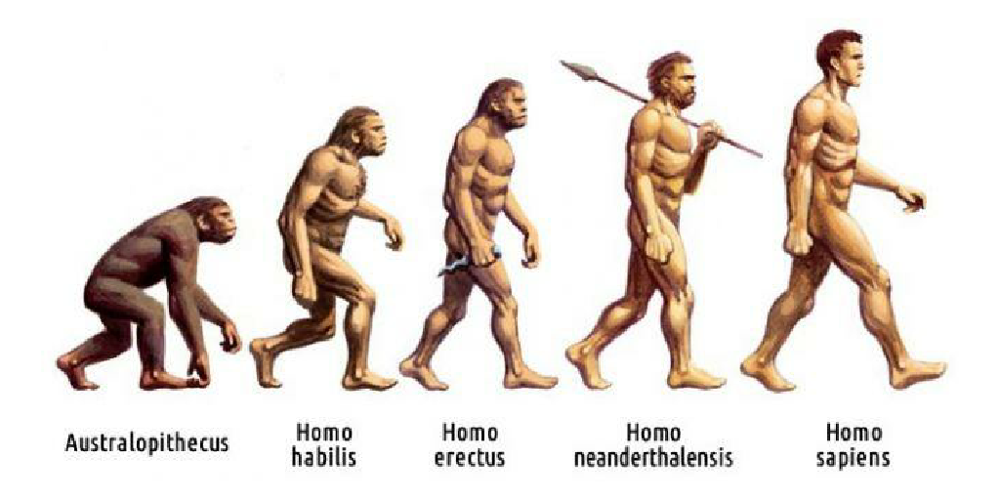
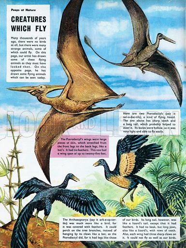

Почетком 1856. године Дарвин је истраживао да ли јаја и семенке могу да преживе прекоокеанско путовање. Биолог Џозеф Хукер је све више сумњао у идеју да су врсте непроменљиве, али је њихов млади колега Томас Хаксли остао убеђен да је трансмутација врста немогућа. Чарлс Лејел је био заинтересован за Дарвинову теорију иако није схватио њен опсег. Када је прочитао рад Алфреда Воласа „О Закону који је регулисао увођење нових врста“ , Лејел је увидео сличност са Дарвиновим идејама и наговорио га да их објави. Иако Дарвин Воласов рад није видео као претњу, одлучио је да почне писати кратки чланак о теми коју је обрађивао претходних 15 година. То је била само увертира у „велику књигу о врстама“ под називом „Природна селекција“ која је требало да обухвати и „белешку о човеку“. 
Зато је наставио да истражује и прикупља податке од природњака из целог света, укључујући и Воласа који је радио у Борнеу. Половином 1857. године у књигу је додао поглавље „Теорија примењена на утрке човечанства“. Детаљан преглед својих идеја послао америчком ботаничару Аси Греју укључујући апстракт „Природни одабир“, али без дела о људском пореклу и полној селекцији. На Воласово питање да ли ће се у књизи наћи део о људском пореклу, Дарвин је одговорио да ће избегавати ту тему због бројних предрасуда. У моменту док је Дарвин још писао књигу, Волас му је послао рад у коме описује природну селекцију. Дарвин је тај рад одмах проследио Лејлу да га објави у било ком часопису који Волас жели, иако Волас то није тражио. Рад је објављен у часопису „Леннеан Социетy“ 1. јула. С обзиром да је Дарвинов син умро од црвене грознице пар дана пре тога није могао да присуствује презентацији. Научни кругови нису видели ништа револуционарно у Воласовом раду, штавише, професор Семјуел Хаугтон рекао је да је „све ново у том истраживању лажно, а оно што је истинито, није ништа ново“.
Упркос болести, али на наговор својих пријатеља, тринаест месеци касније Дарвин је објавио сажетак своје „велике књиге“. „О пореклу врста“ се показала неочекивано популарном књигом. Књижаре су до 1859. распродале целу залиху од 1 250 примерака. У књизи је Дарвин поставио детаљна опажања, закључаке и разматрања очекиваних примедби. Да би доказао заједничко порекло, у књигу је укључио доказе о хомологијама између људи и других сисара. Револуционарну теорију изнео је већ у уводу указујући на сталну борбу за преживљавање под сложеним и различитим животним условима, алудирајући при том на природну селекцију.
|  | Archosauria | Chrocodylia |
| Pterosauria | ||
| Dinosauria | Ornitihischia | |
| Sauropodomorpha | ||
| Theropoda |